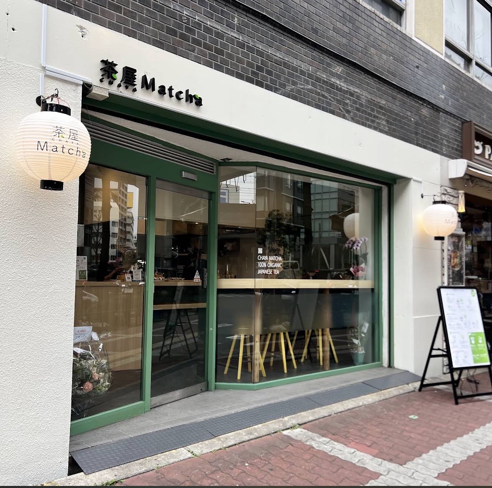

100% ORGANIC MATCHA STAND
有機栽培のオーガニック抹茶だけを使う、抹茶スタンド。
鹿児島と京都宇治、二つの産地から選んでいただき、
カウンターの目の前で、一杯ずつ茶筅を振ります。

一杯ずつ、点てたてを。
一服のこと
派手な甘さで包んでしまえば、抹茶の輪郭はすぐに消えてしまう。
だから茶屋Matchaでは、素材と、点て方と、居心地。
その三つだけに手をかけています。
使うのは、有機栽培のオーガニック抹茶。甘みにはきび糖を選び、香りを覆い隠さない量に留めています。きび糖なしのご指定もどうぞ。ミルクは牛乳と、オーガニックのオーツミルクから。
注文をいただいてから、一杯ずつ。カウンター越しに湯と抹茶が混ざり、泡が立ちあがるところまでが一杯です。点てたての香りは、その場でしか受け取れません。
大きな窓を通りに向けて開いた、明るいスタンド。立ち寄って一杯だけ、も歓迎です。腰かけて味わうこともできますし、そのまま茶屋町の街へ持ち出すこともできます。
店舗情報
掲載内容は取材時点のものです。メニュー・価格・営業時間は変更になる場合がございます。